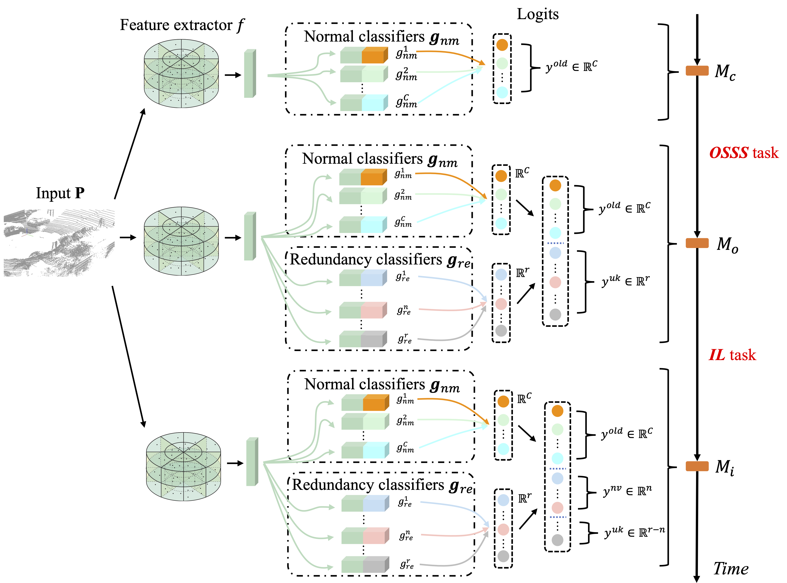

My research lies in open-set recognition and incremental learning. My previous work focus on 2D semantic segmentation, 3D object detection, 3D LIDAR semantic segmentation, video recognition and image recognition.
I'm always looking for related colaboration. If you are interested to chat with me, feel free to drop me an email.
I will be on the job market in the summer of 2024. Here is my CV. Please feel free to drop me an email if you have any interests.
Experience
Visiting Student | MMLab, Nanyang Technological University
Time: Mar 2023 - Present. Mentor: Prof. Ziwei Liu
Reseach Intern | City Brain & Autonomous Driving Group, Damo Academy, Alibaba
Time: Mar 2022 - Mar 2023. Mentor: Dr. Shiwei Zhang
Ph.D. Student | Robotics Institute, The Hong Kong University of Science and Technology
Time: Sep 2020 - Present. Mentor: Prof. Qifeng Chen and Prof. Michael Yu Wang
Algorithm Intern | Autonomous Driving Group, Hikvision Reseach Institute
Time: Mar 2020 - July 2020. Mentor: Dr. Yushi Zhu
Research Assistant | Robotics and Artificial Intelligence Laboratory, The Chinese University of Hong Kong (Shenzhen)
Time: Nov 2019 - Feb 2020. Mentor: Prof. Tin Lun Lam
MSc Student | The Hong Kong University of Science and Technology
Time: Sep 2019 - July 2020. Mentor: Prof. Lilong Cai
Undergraduate Student | Zhejiang University
Time: Sep 2015 - Sep 2019. Mentor: Prof. Jinghua Xu
The Devil is in the Wrongly-classified Samples: Towards Unified Open-set Recognition Jun Cen*, Di Luan*, Shiwei Zhang, Yixuan Pei, Yingya Zhang, Deli Zhao, Shaojie Shen, Qifeng Chen International Conference on Learning Representations (ICLR), 2023 [Paper]
Learning a Condensed Frame for Memory-Efficient
Video Class-Incremental Learning
Yixuan Pei*, Zhiwu Qing*, Jun Cen, Xiang Wang, Shiwei Zhang, Yaxiong Wang, Mingqian Tang, Nong Sang, Xueming Qian Conference on Neural Information Processing (NeurIPS), 2022 [Arxiv]

Open-world Semantic Segmentation for LIDAR Point Clouds Jun Cen, Peng Yun, Shiwei Zhang, Junhao Cai, Di Luan, Michael Yu Wang, Ming Liu, Mingqian Tang European Conference on Computer Vision (ECCV), 2022 [Arxiv][Code]
Real-Time Collision-Free Grasp Pose Detection With Geometry-Aware Refinement Using High-Resolution Volume
Junhao Cai, Jun Cen, Haokun Wang, Michael Yu Wang Robotics and Automation Letters (R-AL), 2022 [Paper][Project Page and Code]
Open-set 3D Object Detection Jun Cen, Peng Yun, Junhao Cai, Michael Yu Wang, Ming Liu International Conference on 3D Vision (3DV), 2021 [Arxiv]
Conflicts between Likelihood and Knowledge Distillation in Task Incremental Learning for 3D Object Detection
Peng Yun, Jun Cen, Ming Liu International Conference on 3D Vision (3DV), 2021 [Paper]
Deep Metric Learning for Open World Semantic Segmentation Jun Cen, Peng Yun, Junhao Cai, Michael Yu Wang, Ming Liu International Conference on Computer Vision (ICCV), 2021 [Arxiv][Code][Video]
BORM: Bayesian Object Relation Model for Indoor Scene Recognition
Liguang Zhou, Jun Cen, Xingchao Wang, Zhenglong Sun, Tin Lun Lam, Yangsheng Xu
International Conference on Intelligent Robots and Systems (IROS), 2021 [Arxiv][Code][Video]
Precision forward design for 3D printing using kinematic sensitivity via Jacobian matrix considering uncertainty
Jinghua Xu, Xueqing Feng, Jun Cen, Shuyou Zhang The International Journal of Advanced Manufacturing Technology, 2022 [Paper]
Services
Conference and Journal Reviewer:
IEEE Transactions on Pattern Analysis and Machine Intelligence (TPAMI) IEEE/CVF Computer Vision and Pattern Recognition Conference (CVPR) IEEE/RAS International Conference on Intelligent Robots and Systems (IROS) IEEE/RAS International Conference on Robotics and Automation (ICRA) IEEE/CAA Journal of Automatica Sinica (JAS) (中国自动化学报)